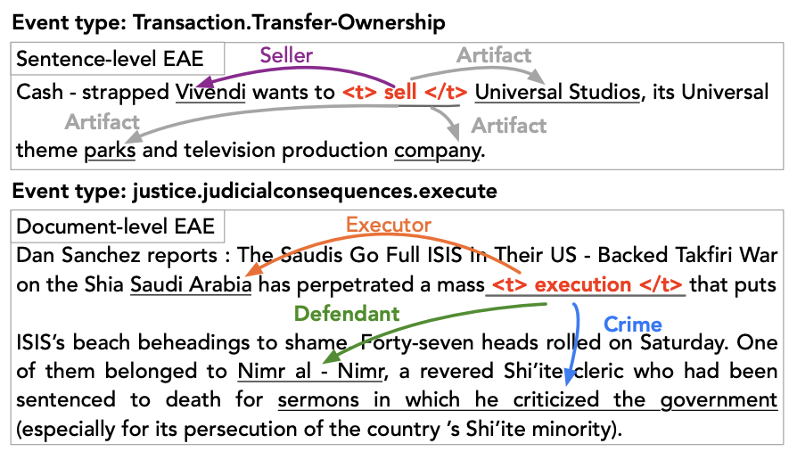

|
||||||||||
| He is a Ph.D. candidate in KU Leuven under the supervision of Prof. Tinne Tuytelaars. He has a close cooperation with Prof. José Oramas and Kaili Wang during master study at KU Leuven. Before that, He obtained his Bachelor's degree from University of Macau. His research interests are Embodied AI and Information Extraction. |
Publications
(* stands for co-first authorship)
Few-shot Event Detection: An Empirical Study and a Unified View Yubo Ma, Zehao Wang, Yixin Cao, Aixin Sun ACL 2023 main conference
|
Find a Way Forward: a Language-Guided Semantic Map Navigator Zehao Wang*, Mingxiao Li*, Minye Wu, Marie-Francine Moens, Tinne Tuytelaars submission under review
|
Layout-aware Dreamer for Embodied Referring Expression Grounding Mingxiao Li*, Zehao Wang*, Tinne Tuytelaars, Marie-Francine Moens AAAI 2023 main conference (Oral)
|
|  |
Prompt for Extraction? PAIE: Prompting Argument Interaction for Event Argument Extraction Yubo Ma*, Zehao Wang*, Mukai Li, Meiqi Chen, Kun Wang, Jing Shao, Yixin Cao ACL 2022 main conference
|
Experience
Research Intern, SenseTime AGI group，Febuary 1st, 2021 - August 1st, 2021